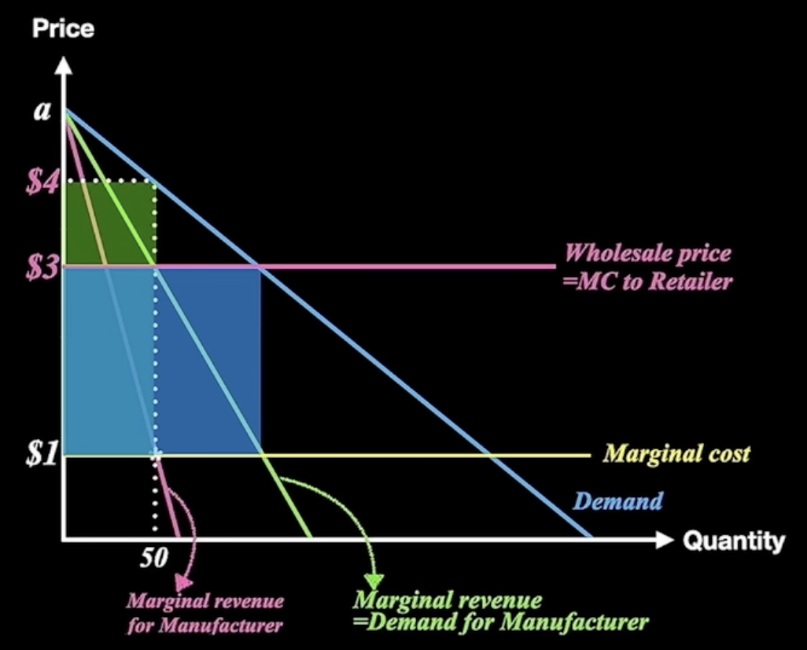

供应链运作的协调与激励⚓︎
约 4090 个字 预计阅读时间 14 分钟
牛鞭效应⚓︎
- 需求的波动会沿着供应链往上游传导，不断放大（Bullwhip Effect）
产生的原因⚓︎
- 需求预测仅仅依靠前一级订单，会导致需求的扭曲会逐级积累、逐级放大。（基于订单的、各自为政的预测，信息不通畅）
- 传统预测的参照数据是直接按照下游客户的订货进行的
- 各节点企业对需求预测数据进行人为的整理和修改，改变了真实需求；
- 规模经济的影响（批量订货）
- 企业在再订货点才向上游订货
- 企业的每次订货都会随着市场需求的变化而变化
- 考虑到运输成本、固定成本，供应商会提供批量折扣优惠，一些企业会刻意放大自己的需求，或者大批量订货，导致需求畸形
- 价格波动（企业的价格策略）
- 促销，下游的期货购买：一次性买很多 / 一次性降低很多购买量，但是这实际上是对生产厂商和分销商的两败俱伤；
- 诱导顾客的提前购买
- 抢占对手的市场份额导致原本竞争对手的顾客转变为自己的顾客，实际上是假性的需求上升
- 补货提前期延长
- 补货企业发出订单，会将两次供货期间的需求计算在内，需求变动的不确定性导致需求不确定变大
- 需求变异现象随着补货周期的延长而放大
- 配给和缺货导致的竞争
- 供不应求的现象，一个买家从多方订单，但是有了货就会取消其他方的订单。
- 产品短缺时按照比例供货的策略（恐慌性订货）
零售商看到，订货量大的可以优先拿到货，那就多拿点，提前拿到货，再把没到的货取消；不过对于供应商而言，会误以为这个产品畅销，从而加大生产。
影响⚓︎
- 成本（生产、库存、配送成本上升）
- 产品供给水平下降
- 供应链中合作关系受损
解决方法⚓︎
- 提高供应链企业对需求信息的共享性
- 科学确定定价策略
- 提高运营管理水平，缩短提前期
- 提高供应能力的透明度～
信息共享的风险（Newbury Comics）⚓︎
- 值钱的数据：行业报告
- 不允许把同样的数据出售给竞争对手
- 不能盲目地共享信息
Firm Strategies in the "mid Tail" of platform-based retailing
一些第三方零售会刻意隐藏自己的销售信息，防止被平台收购专营。（Against Amazing）
亚马逊也会尝试识别出哪些人隐藏了自己的～
曲棍球棒效应⚓︎
- 在某一个固定周期中，前期销量很低，到期末销量会有突发性增长，并且在连续周期中，这种现象会周而复始，称为曲棍球棒现象（Hockey-Stick）现象；
产生的原因⚓︎
- 企业内部销售人员的激励机制
- 快销品行业，为促使经销商长期更多的购买，普遍采用总量折扣（Volume Discounts）的价格政策，这种促销政策是造成Hockey Stick的根源
影响⚓︎
- 企业的库存费用比需求均衡时高
- 造成期初时候大量的订单处理、作业人员和车辆的闲置；在期末任务又太多，加班也处理不完了，不得不从外部寻求支援。
一个很经典的例子：双十一
- 工作人员的差错率变高
缓解方法⚓︎
- 天天低价
- 采用总量折扣和对部分产品降价相结合的方式
- 对不同经销商采用不同的统计和考核措施
- 和经销商共享需求信息和改进预测方法
- 公司根据经销商的实际销售量提供折扣方案
物料齐套比率差的现象⚓︎
- 加工-装配企业，制造商的上游供应链很多且分布很散，外购件的“齐全配套”和JIT是很大矛盾（供应商的各自为政）
带来的问题⚓︎
- 订单延误
- 库存周转率低
- 外购件压库现象严重
- 成本上升
缓解方法⚓︎
- 上游企业采用make to Stock的生产，保留安全库存（推式生产）
- 实施联合库存管理
- 做好信息共存，做好ERP系统，打破上下游企业壁垒
双重边际效应⚓︎
- （Double Marginalization）供应链上下游企业为了谋求各自利益最大化，在独立决策过程中确定的产品批发价格和零售价格过高的现象。
- 个体利益最大化的目标往往对供应链其他成员的收益产生影响
比较+数学推导⚓︎
- 集中决策机制（自己生产、自己销售产品）
\[\left\{ \begin{aligned} p & = a - q \\ \Omega & = (p - c)q \end{aligned} \right.\]
\[q^* = \dfrac{a - c}{2} \\ p^* = \dfrac{a + c}{2} \\ \Omega^* = \dfrac{(a - c)^2}{4}\]
- 分散决策机制
\[\left\{ \begin{aligned} p & = a - q \\ \Omega & = (p - c)q \end{aligned} \right.\]
\[q^* = \dfrac{a - c}{2} \\ p^* = \dfrac{a + c}{2} \\ c = w \\ w = a - 2q\]
此时对于制造商，\(w = a - 2q\); \(\prod = (w - c) q\)
同理进行求导可以得到
\[q^* = (a - c)/4 \\ w^* = (a + c) / 2 \\ p^* = (3a + c)/4\]
此时对于供应商，其利润为 \(\Omega_m = (a - c)^2 / 8\)
将 \(\Omega\) 代入零售商的p中，可以计算出\(\Omega_r = (a - c)^2 / 4\)，此时总利润为 \(3(a - c)^2 / 16\)，小于集中决策的总利润。

双重边际效应带来的问题⚓︎
- 总利润比整体决策下供应链的利润低；
-
即使在信息共享下，双重边际效应也会发生，因为这是由供应链主体的利益根本冲突决定的。
福特公司就曾经采取大企业的“纵向一体化”，不仅要控制T型车的生产制造，还要控制矿石、挡风玻璃的生产；
现在，推崇“每个公司专注自己的核心业务”的“横向一体化”
-
“巨无霸”的公司缺乏灵活性，而一些新技术都是从中小企业开发出来的。
- 因为“纵向一体化”无法保证行业中不出现创新，消除双重边际效应是在行业中没有新技术涌现的时候才有足够的效用；
缓解双重边际效应⚓︎
- 实现供应链协调是缓解双重边际效应的关键
- 以双赢或者多赢为目标
- 供应合同是一种实现供应链协调的有效机制
-
博弈论的研究方法
-
传统分级供应链批发策略下的利润：
- 如果风险都由零售商承担，其订货量不会是总体最优的订货量。
供应链合同-MTO 方式下的合同⚓︎
买方承担更多的风险
回购合同（Buy-Back Contract）⚓︎
- 供应商承诺零售商，回购所有未销售产品；
- 零售商会因此而订购更多的商品
- 供应商可以只是购买商品，而不用实际回收该商品
- 如何确定回购价格？
- 回购价格 = 运输成本 + 零售价 - （零售价 - 批发价） \(\times\) （零售价 - 残值） / （零售价 - 生产成本）
- 回购合同的缺点：
- 如果零售商处理剩余库存的残值高于供应商处理剩余库存的残值，回购的效率就会降低（还不如不运给供应商）
- 返回货物将产生运输成本
- 零售商销售产品的积极性下降，反而提高了零售商推销没有采用回购合同的竞争产品的积极性（一个产品提供了，一个产品没提供回购合同，零售商倾向于卖没有回购合同的，因为这种产品的风险更高）
- 解决方案：供应商派遣自己的推销员。
- 如果供应商有生产能力限制，会引起零售商的短缺博弈，从而导致牛鞭效应。
一个名词：垄断利润：如果仅仅由一个企业来做决策，能够获得的最大利润。
太子奶的案例分析： 卖不掉的货可以退回厂家 -> 零售商不需要承担风险（成本）了，直接退回就行了。在回购合同中，回购价格一定要大于零售商自己处理的成本，小于批发价格
零售商一定会夸大订货（需求扭曲放大了，放大了牛鞭效应）
"先打款后发货"：让集团能利用经销商资金进行周转：玩金融，加大了集团承担的风险。
解决方案：回购价格低于批发价格；回购量不能超过一定比例
收益共享合同（Revenue Sharing Contract）⚓︎
- 供应商降低批发价 \(W\) ，但是从零售商所获的利润中获得一定百分比 \(\alpha\) 的收益。
-
流程：
- 制造商决定合同参数 \(W\) 和 \(\alpha\)，
- 零售商购买\(q\)单位产品，付款Wq给制造商
- 制造商生产和运送\(q\)单位商品给零售商
- 零售商获得\(\Omega_R(q)\)的收益后，把 \(\alpha \Omega_R(q)\)的利润给制造商
-
如何确定\(W\)和\(\alpha\)？
泳装供应链(Make to Order，因为提前期很短，可以很快生产)；滑雪服供应链(Make to Stock，因为材料很难迅速获得)以下是一个经典的 MTO 的案例；
- Blockbuster 案例
新发售的电影需求很高，但是很快下降。高峰期10周左右；
批发价格65 / 盒，但是出租的价格只有3。Bb无法判断一次购买多少盒录像带才能满足需求高峰；一些顾客无法找到想要的录像带；
解决方案：收益共享合同： 从1998年开始，Blockbuster和主要的电影发行商派拉蒙等实施收益共享的策略，电影发行商以＄8/盒的价格销售给Blockbuster；Blockbuster支付收益的30%～45%给电影发行商 > 每部电影的录像带库存量上升到124盘 > 出租量上升了75% > 市场占有率从25%上升 到31%,2002年达到40%
Note
但是迪士尼和派拉蒙感觉自己的收入并没有获得预期的增长。一个可能的解释是，Blockbuster吸引走了一部分“会去电影院看电影的顾客”，这导致电影公司“右口袋的钱流到了左口袋”；另一个解释是Blockbuster瞒报了一部分顾客信息。
局限性⚓︎
- 要求供应商能够检测零售商收入，增加管理费用
- 在供应商和零售商之间建立和维护信任很重要，也很困难
- 收入共享合同通常降低了零售商销售该商品的边际利润，所以零售商有推动具有较高边际收益的其他竞争性产品销售的动机；
不管是回购合同还是收益共享合同，一个关键的假设是供应商拥有面向订单生产（MTO）的供应链。这意味着在不使用供应链合同的传统分级供应链中，卖方不承担风险而买方承担了所有的风险。通过回购合同或者收益共享合同，一部分风险从买方转移到了卖方，从而促使买方下订单的量接近供应链集中决策时的最优订货量
供应链合同-MTS 方式下的合同⚓︎
卖方承担更多的风险
补偿合(Pay-Back Contract)⚓︎
-
考虑滑雪服的案例，提前期很长。需要提前半年准备。属于Make To Stock的方式进行生产，（此时制造商承担了所有的风险）
-
补偿合同（Pay-Back Contract），买方统一支付协议价格来补偿卖方已生产的、但买方未购买的产品；
问题：如何设置补偿价格？
通过动态博弈计算。
成本分担合同（Cost Sharing Contract）⚓︎
- 买方分担部分生产成本(\alpha，总成本的比例)；同时卖方给买方提供批发价格的折扣（降低到W）
- 降低了卖方的生产成本
Note
上面两个合同的核心目的，都是试图使制造商多生产一点，而零售商也愿意接受这个结果。不然所有的风险都是制造商承担的。
成本分摊合同往往需要卖方和买方生产成本的信息，这往往不是卖方愿意做的。此时该如何操作
买方采购一种或多种卖方生产中需要的元件，把这些买方采购的元件直接送到卖方的工厂。这样既完成了成本分担，也没有泄露卖方的生产成本信息
供应链合同-信息不对称下的合同⚓︎
能力预定合同⚓︎
- 买房必须支付卖方一定的费用来预定某一水平的产能。预定价格是卖方设计的，用来激励买方透露其真实的预测。
预购合同⚓︎
- 买方在卖方产能规划之前下单，卖方将收取买方预购价；而当需求实现时，任何多余的订单都要收取不同的价格。同样，买方作出的初始承诺向卖方提供了买方真实的预测信息。
供应链合同-非战略性元件合同⚓︎
- 可以从许多供应商那里获取并可在现货市场上购买的元件称为非战路性元件，比如电、计算机存储器、钢材、油、谷物或棉花等大宗商品；大宗商品的来购策略是降低成本并减少风险：
- 需求不确定而导致的库存风险
- 动态市场价格而导致的价格或财务风险
- 部件的有限可得性而导致的短缺风险
长期合同⚓︎
- 也称为期货合同或定期合同。长期合同消除了财务风险。这些合同约定在将来的某个时间点T 交付固定数量的货物。卖方和买方就交付的价格P和数量Q达成一致
- 在这种合同下，买方不承担财务风险，但由于需求不确定和订单数量不能调鳌而承担了 巨大的库存风险
期权合同⚓︎
- 在期权合同（也叫柔性合同）中，买方预先支付产品预购价的一小部分D，来回报卖方在一定期限T内保留一定水平的产能的承诺。开始支付的费用通常被用作预定价格或保证金。如果买方没有行使期权，就会失去开始支付的费用。买方可以购买 不超过期权水平Q的任何数量的产品并为购买的每单位产品支付另外的价格w。这个价格在签订合同的时候就已经约定。这种价格被称为执行价格或展行价格。当然，买方为购买的每单位产品所支付的总价格（预订价格+执行价格）通常会高于长期合同中的单位价格。
减少买方的库存的风险，转移给了卖方
买的不是“货”，而是“买这么多货的权利”，这种权利可以转让，也可以自己使用，也可以放弃。
现货购买⚓︎
- 买方在自由市场上寻找额外的供应
- 买方可能用到独立的电子市场或者企业自己的电子市场来挑选供应商；
组合合同⚓︎
- 买方为了优化利润并降低风险，可能签订多种合同；
其他合同⚓︎
最低购买数量合同⚓︎
- 厂商在初期做出承诺，在一定时期内提供一定数量产品；供应商根据购买数量给予价格折扣；
- 最低购买价值合同
- 数量柔性合同：
- 供应商对退货全额退款，只要退货数量不超过一定双方约定的量。
创建日期: June 19, 2023 12:21:23